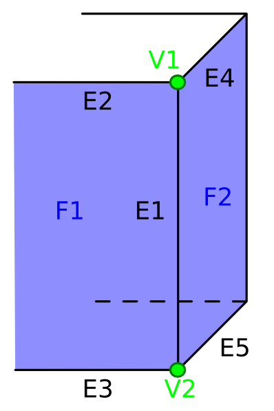

Základní dělení
- Hraniční reprezentace
- Plošková reprezentace
- Bodová reprezentace
- Konstruktivní geometrie těles
- Objemová reprezentace
Plošková reprezentace
Nejčastější způsob uložení 3D objektů v paměti i na disku. Nezajímá nás vnitřek objektu, ale pouze to, co je na povrchu.
Povrch je složen z:
- Vertexy (3D souřadnice krajních bodů)
- Hrany (spojení dvou vertexů)
- Plošky (spojení alespoň tří vertexů)
Trojúhelník & N-úhelník
Síť n-úhelníků se nakonec v zobrazovacím řetězci vždy převádí na śíť trojúhelníků, protože trojúhelník má několik důležitých vlastností.
- Všechny jeho body leží v jedné rovině.
- Trojúhelník je vždy konvexní.
- Lze jednoduše a jednoznačně spočítat jeho normálový vektor z jeho krajních bodů.
- Lze jednoduše provádět jeho rasterizaci.
Síť trojúhelníků
Síť trojúhelníků i libovolných n-úhelníků má vždy dvě části:
Geometrická struktura
- Obsahuje pouze souřadnice vertexů
Topologická struktura
- Obsahuje informace o tom, jak jsou vertexy pospojovány do hran a plošek.
Optimalizace sítě trojúhelníků
Síť je někdy vhodné převést na pruh trojúhelníků nebo vějíř trojúhelníků
- Není nutné přenášet takové množství dat na grafický akcelerátor
- Nutná podpora na grafickém akcelátoru a použitém API (OpenGL, WebGL, atd.)
Manifoldní a non-manifoldní objekty
Manifoldní objekt je tzv. vyrobitelný objekt a jeho topologická struktura musí splňovat následující 3 podmínky:
- Každá hrana musí být sdílena pouze dvěma ploškami.
- Žádná hrana neprotíná jinou plošku.
- Žádný vertex nespojuje dvě části objektu.
Jednoduchá plošková reprezentace těles
- Předpokladem je uložení objektu, který splňuje alespoň některá kritérie pro manifoldní objekt.
- Obsahuje informace pouze o poloze vertexů a jejich propojení do plošek.
- Tato struktura je vhodná pro uložení do souboru, případně paměti.
- Je hrubě nevhodná pro úpravu geometrické/topologické struktury.
Příklad - Krychlička
4+----+7
/| /|
5+----+6|
| | | |
|0+--|-+3
|/ |/
1+----+2
Příklad sítě trojúhelníků
Geometrická struktura - vetexy
| 0.0, 0.0, 0.0 |
1.0, 0.0, 0.0 |
1.0, 1.0, 0.0 |
0.0, 1.0, 0.0 |
0.0, 0.0, 1.0 |
1.0, 0.0, 1.0 |
1.0, 1.0, 1.0 |
0.0, 1.0, 1.0 |
Topologická struktura - plošky
| 0, 3, 2, 1 |
0, 1, 5, 4 |
1, 2, 6, 5 |
2, 3, 7, 6 |
3, 0, 4, 7 |
4, 5, 6, 7 |
4, 5, 9, 8 |
Normálový vektor
Normálový vektor plošky lze jednoznačně spočítat ze souřadnic krajních vertexů.
Když budeme uvažovat trojúhelník s krajními body: $P_{1} = [x_{1}, y_{1}, z_{1}]$, $P_{2} = [x_{2}, y_{2}, z_{2}]$ a $P_{3} = [x_{3}, y_{3}, z_{3}]$, tak normálový vektor $\vec{n}$ můžeme spočítat pomocí:
$$
\vec{v_{21}} = P_{2} - P_{1}; \quad \vec{v_{32}} = P_{3} - P_{2} \\
\vec{n} = \vec{v_{21}} \vec{v_{32}}
$$
Datová struktura okřídlené hrany
- Datová struktura vhodná pro dynamickou úpravu geometrie a topologie.
- Lze ji použít pouze pro uložení manifoldních objektů.
- Obsahuje jednak geometrickou strukturu (vertexy).
- Většina informací o topologii je uložena na hranách.
- Dva odkazy na oba vertexy
- Dva odkazy na sousedící plošky
- Čtyři odkazy na přilehlé plošky
- Ploška obsahuje pouze odkaz na jednu ze svých hran.
Příklad okřídlené hrany
| $E_{1}$ | |
| $V_{1}$ | $V_{2}$ |
| $F_{1}$ | $F_{2}$ |
| $E_{3}$ | $E_{4}$ |
| $E_{2}$ | $E_{5}$ |

Vlastnosti okřídlených hran
- Lze jednoduše nalézt všechny sousední plošky
- Lze jednoduše nalézt smyčku hran/plošek
- Ploška nemusí být konvexní
- Ploška může obsahovat díry
Datová struktura půlhrany
- Odstraňuje omezení okřídlených hran na manifoldní objekty.
- Každá hrana je rozdělena na N "půlhran".
Vlastnosti vertexů, hran, plošek a rohů plošek
V aplikacích běžně potřebujeme ukládat společně s geometrickou a topologickou strukturou další dodatečné informace.
Způsob uložení takových dat se liší v závislosti na využití objektů.
Je možné ukládat další uživatelem definované informace.
Vlastnosti vertexů
- Váha vertexů (viz. dopředná a inverzní kinematika)
- Barva vertexů
Vlastnosti hran
- Ostrost hran
- UV mapování ("šev")
Vlastnosti plošek
- Typ stínování
- Textura
- Barva
Dělené plošky
- Algoritmus, který vyhlazuje povrch tělesa s ploškovou reprezentací.
- Existuje několik dělících schémat (aproximační a interpolační).
- Nejčastěji se používá dělící schéma: Catmull-Clark
- Rekurzivní algoritmus
- Generuje čtvercovou síť.
- Výsledná ploch má spojitost $C^{2}$
Dělící schéma Catmull-Clark
Výsledná plocha jedné iterace je tvořena ploškovými, hranovými a vrcholovými vertexy.
Ploškový vertex $V_{F_{i}}$ je průměrem všech vertexů tvořící danou plošku $F_{i}$.
Hranový vertex se spočítá podle následujícího vztahu:
$$
V_{E} = \frac{E_{1} + E_{2} + V_{F_{1} + V_{F_{2}}}}{4}
$$
Vrcholový vertex se spočítá podle následujícího vztahu:
$$
V_{V} = \frac{1}{N}(\frac{1}{N}\sum_{i=1}^{N}V_{F_{i}} + \frac{1}{N}\sum_{i=1}^{N}V_{E_{i}} + \frac{(N-3)}{N}V)
$$
kde $V$ je půvdní vertex